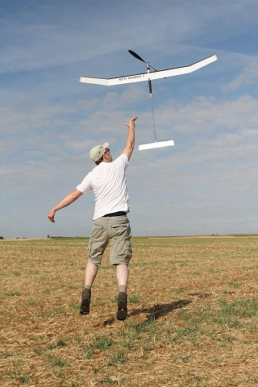
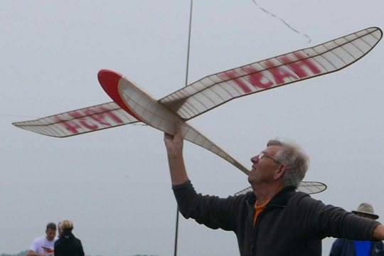
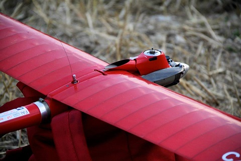
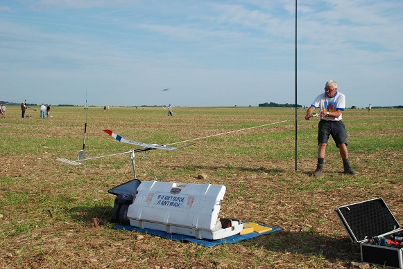
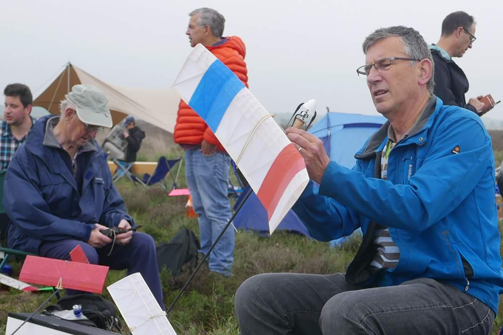

Thomas Cup modelvliegwedstrijd Arnhemse Luchtvaart Club
Op 10 juni a.s., met een uitwijkdatum op 17 juni a.s., wordt door de ALC de Thomas Cup vrije vluchtwedstrijd georganiseerd. Organisatoren zijn P. Dibbets en R. Kreetz, beiden ervaren vrije vluchtvliegers.

De wedstrijd staat vermeld op de wedstrijdkalender 2023 van de KNVvL als selectiewedstrijd voor de nationale ploeg voor deelname aan EK e/o WK en wordt daarom gevlogen onder auspiciën van de Subcommissie Vrije Vlucht. Gevlogen wordt in de klassen A2 (F1A), Wakefield (F1B), Electro-power (F1Q), E36 (Small electro) en Chuck (werpmodellen). Parkeren alleen aan het Hessenmeer, de grindweg aan de westzijde van het veld, waar voldoende parkeermogelijkheden zijn en niet aan de oostelijk gelegen drukke provinciale weg. Het veld met de startplaats is vandaar af te voet en per fiets bereikbaar. Auto’s zijn niet toegestaan.
Hier volgt een korte samenvatting van de historie van de ALC, de Thomas Cup-wedstrijd en het vrije vlucht modelvliegen in Nederland.
De Arnhemse Luchtvaart Club (ALC) behoort tot de oudste modelvliegverenigingen van Nederland. Opgericht in 1930, met prachtige vlieglocaties in de omgeving w.o. het Rozendaalse Veld, werd gevlogen met vrij-vliegende zweefmodellen en/of modellen met een opgewonden rubberstreng aangedreven motor gebouwd van triplex, vuren- en balsahout en bekleed met tissue papier of zijde.

Vrije vlucht is de oudste modelvliegtak in Nederland, want voor de 2e Wereldoorlog waren er in Nederland nog nauwelijks brandstofmotoren en geen radio-besturing bekend laat staan beschikbaar. Al snel ontstond de behoefte om eerst lokaal, later regionaal en nationaal elkaars bouw- en vliegprestaties te meten en vliegwedstrijden te organiseren. Clubs uit die tijd waren o.a. de Nijmeegse LVC en de Zwolse MVC. Er werd gevlogen in de wedstrijdklassen Nordic A2 (zweef) en Wakefield (rubber-zweef) op basis van reglementen en kennis die grotendeels uit Engeland en Duitsland afkomstig waren.

Na de oorlog werd het vrije vluchtvliegen, na het opschonen van de vliegterreinen van allerlei oorlogsmateriaal, weer snel opgepakt en werden de eerste wedstrijden gevlogen w.o. ook de Thomas Cup. Deze naam was verbonden aan een van de toenmalige ALC prominenten.

Inmiddels was er ook uitbreiding in de vrije vlucht klassen met Power (2,5 cc motor-zweef, in 10 sec zo hoog mogelijk en dan zweven), en A1 (kleine zweefmodellen, minimaal 210 gram) en werd er met lijnbestuurde motormodellen (in een cirkel met een straal van 20m) gevlogen o.a. op Terlet en Schaarsbergen. Vrije vlucht en lijnbesturing waren echte ALC-modelvliegactiviteiten. Het inmiddels sterk opgekomen RC (radio-bestuurd)-vliegen in Nederland werd binnen de ALC nog niet opgepikt. Oorzaak waren de grote nationale en internationale successen in de vrije vlucht (vanaf 1950) en later (60-er jaren) ook in de lijnbesturing. Arnhemse topvliegers als Anne Buiter (Huis van Handenarbeid aan de Velperbuitensingel), Louis Bausch, Lucien Doorduijn en de gebr. Hekking (ja, die van de kachelzaak in de stad) gingen mee naar Wereldkampioenschappen en andere buitenlandse wedstrijden. Bij lijnbesturing deed Loet Wakkerman in de combat- en team-race klasse van zich spreken.

Pas in de jaren ’80 deed ook de radiobesturing bij de ALC zijn intrede en verminderde de belangstelling voor het vrije vluchtvliegen en lijnbesturing m.n. door terrein- en geluidsproblemen en een verschoven aandacht van m.n. de jeugd. Deze trend is in heel modelvliegend Nederland waarneembaar geweest en heeft geleid tot het overblijven van slechts 20-25 actieve vrije-vlucht vliegers verzameld in slechts 2 clubs in Nederland (Nijmegen en Goirle) die op een hoog (wereld) niveau bouwen en vliegen. Voortrekker in deze is Allard van Wallene, die zijn koolstofmodellen ontwerpt en bouwt incl. alle moderne gadgets als hoogtemeter, GPS terugzoeksysteem, RDT-thermiekremsystemen (waarmee de vlucht kan worden beëindigd door het laten opklappen van het stabilo) en middels computer (voor)geprogrammeerde flap- stabilo- roer instellingen. Let op: er mag behoudens RDT niet radio bestuurd en versteld worden tijdens de vlucht, het is en blijft vrije vlucht.

De Thomas Cup wedstrijd is tot aan de corona periode een blijvertje geweest op de jaarlijkse vrije- vlucht kalender. Welliswaar niet meer gevlogen op het Rozendaalse Veld, maar op het Speulderveld bij Garderen. Dit i.v.m. meer beschikbare ruimte (2x zo groot als het Rozendaalse Veld en een betere toegankelijkheid) en een minder restrictief gemeentelijk/provinciaal natuur beleid. Dit jaar gaan we opnieuw van start.
De wedstrijd wordt bij goed weer (wind max 5 m/s, liefst geen regen) gevlogen in de voorzomer met lange daglicht periode i.v.m. de aan het eind van de wedstrijd te vliegen fly-off in de avonduren. De wedstrijd begint rond 10.30 uur (briefing om 10.15 uur) een kent min. 5 en max. 7 ronden van ca 1 uur afhankelijk van de weersomstandigheden. In dat uur moet iedere vlieger een vlucht van maximaal 3 minuten (de max) maken (waarbij de vlucht wordt beëindigd middels een DT (Dethermal)-systeem, vroeger een lontje, daarna een mechanisch timertje en tegenwoordig een on-board computer of door de vlieger bediend RDT-systeem), waarbij de tijd vanaf ontkoppelen tot het neerkomen op de grond wordt genoteerd door een tijdopnemer. De resterende rondetijd wordt gebruikt voor de vluchtvoorbereiding en het terugzoeken en ophalen van het model. Te voet en/of met de mountainbike.
Aan het eind van de dag gaan degenen die vol staan (alle vluchten een max) in een of meerdere rondes met een verhoogde max naar 6, 8 of zelfs 10 minuten met elkaar de strijd aan voor de wedstrijdzege. Hoe later het wordt hoe minder sterk de thermiek en dat leidt tot fraaie en spannende avondvluchten. Belangrijk aspect daarbij is de bereikte lanceerhoogte, tot soms wel 120 m (!) met een standaard lijnlengte van 50m, en de visuele zichtbaarheid voor de tijdwaarnemers van het model tegen een donkere en soms beboste achtergrond. Maar ook daar zijn weer hulpmiddelen voor bedacht zoals ingebouwde flashers en gecalibreerde hoogtemeters.
Vrije vlucht gaat met zijn tijd mee !